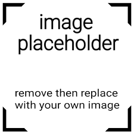
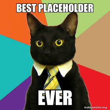

Branding & Druk
Identyfikacja wizualna marki
Kompleksowy projekt identyfikacji wizualnej: logo, księga znaku, typografia oraz materiały drukowane.
Zobacz szczegóły →
Poniżej znajdziesz wybór moich realizacji z zakresu identyfikacji wizualnej, UI/UX oraz grafiki wydawniczej. Kliknij na dowolną pracę, aby poznać szczegóły projektu.
Kompleksowy projekt identyfikacji wizualnej: logo, księga znaku, typografia oraz materiały drukowane.

Projekt interfejsu aplikacji do zarządzania zadaniami z naciskiem na prostotę i dostępność WCAG.

Seria plakatów łączących digital painting z nowoczesną typografią geometryczną.